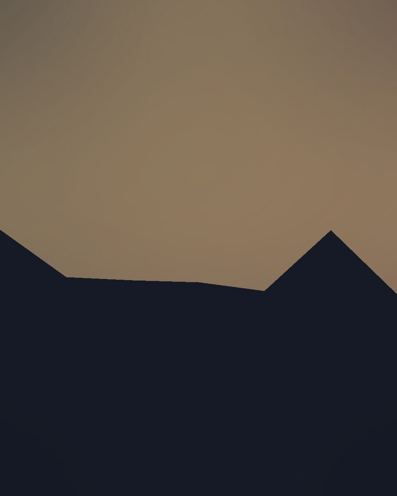
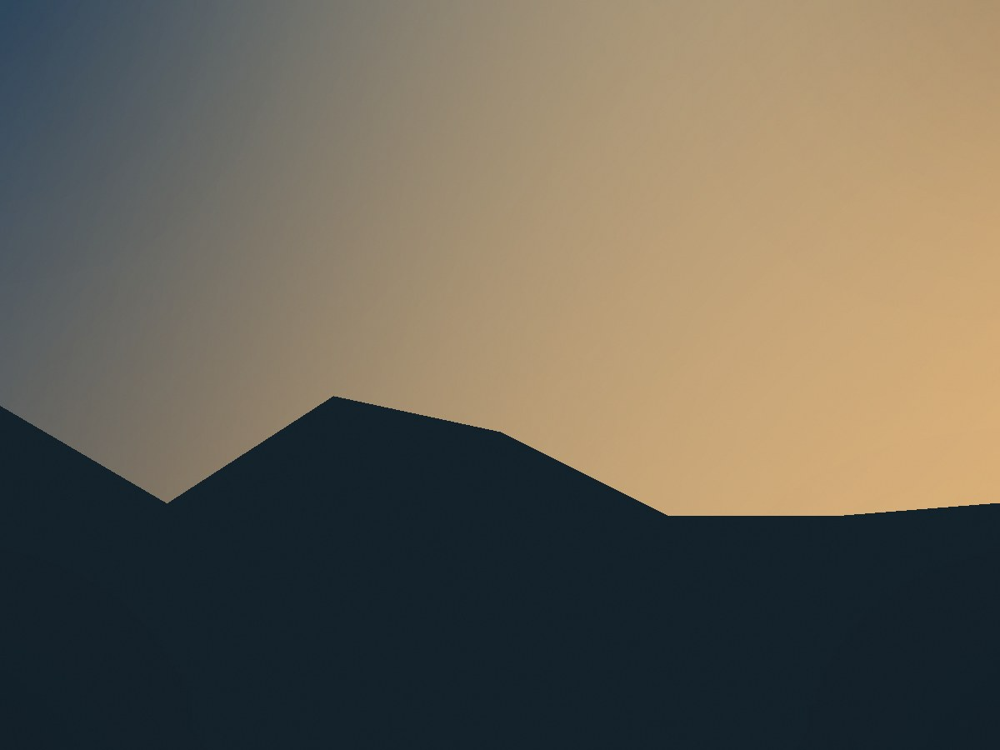
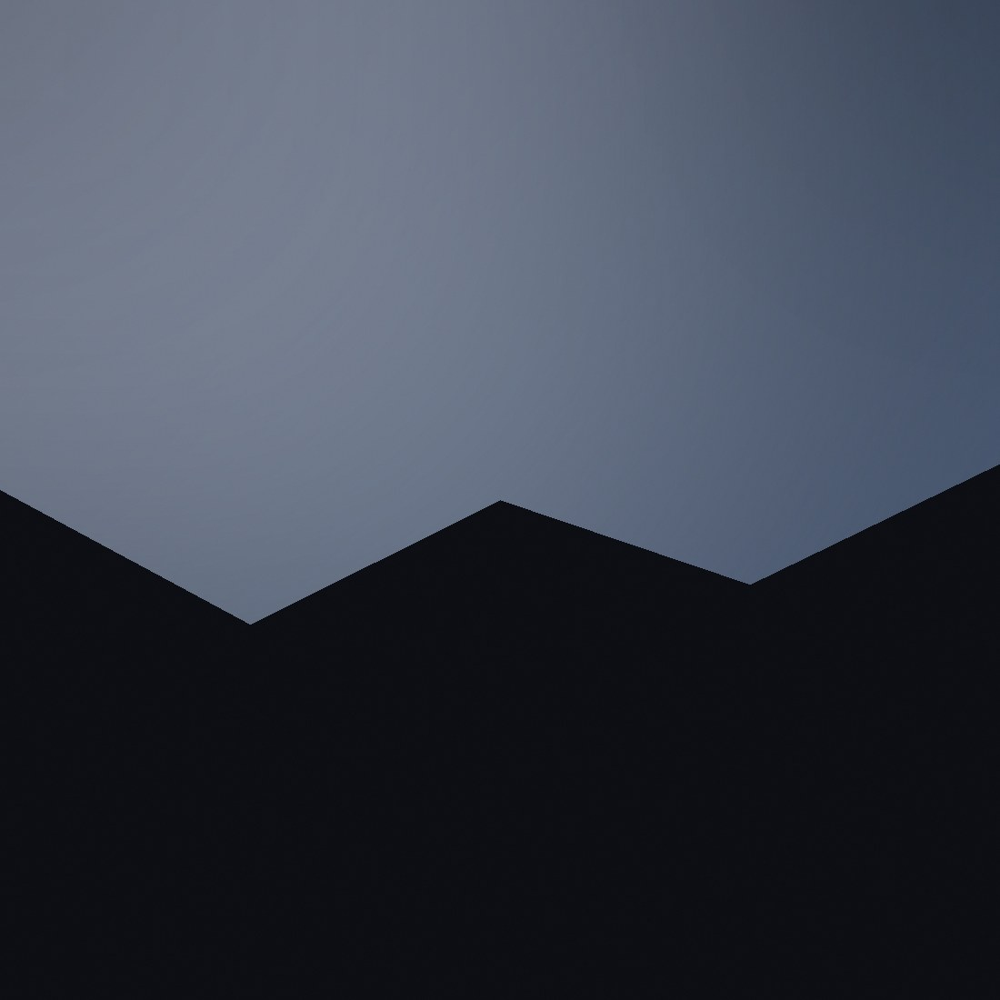
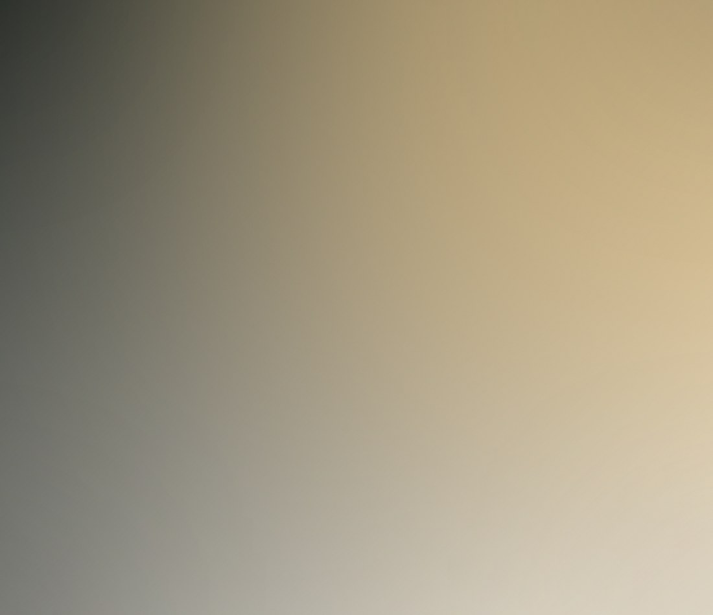

Web Designer · Kathmandu, Nepal वेब डिजाइनर · काठमाडौं, नेपाल
Binod Bhandari विनोद भण्डारी
Building clean, dependable web experiences — and a life centred on family, music, and the open road. स्वच्छ र भरपर्दो वेब अनुभव बनाउने काम — अनि परिवार, सङ्गीत र यात्रामा रमाउने जीवन।
About Me · मेरो बारेमा
Six years, one craft. छ वर्ष, एउटै सीप।
I'm a senior web developer with over six years of experience across the full front-end lifecycle — from the first wireframe to the last pixel in production. My toolkit runs deep: HTML5, CSS3, SASS, LESS, JavaScript, jQuery, and Angular — backed by a steady hand for managing teams and projects end to end.
म ६ वर्षभन्दा बढी अनुभव भएको सिनियर वेब डेभलपर हुँ, सुरुको वायरफ्रेमदेखि प्रोडक्शनको अन्तिम पिक्सेलसम्म फ्रन्ट-इन्ड विकासको हरेक चरणमा काम गरेको छु। मेरो सीप HTML5, CSS3, SASS, LESS, JavaScript, jQuery, र Angular मा गहिरो छ — साथै टिम र प्रोजेक्ट व्यवस्थापनको भरपर्दो अनुभव पनि।
वर्षको अनुभव
सम्पूर्ण विकास चक्र
मुख्य विशेषज्ञता
Family · परिवार
The person who changed everything सबैकुरा बदलिदिने व्यक्ति
The person who's made the greatest impact on my life. The moment he was finally placed in my arms, I looked into his eyes and felt a love I'd never known before — complete, and quietly overwhelming.
मेरो जीवनमा सबैभन्दा ठूलो प्रभाव पार्ने व्यक्ति। उनलाई पहिलोपटक काखमा लिएको त्यो क्षणमा, उनका आँखामा हेर्दा मैले पहिले कहिल्यै नभेटेको माया महसुस गरें — पूर्ण, र मनलाई गहिरोसम्म छुने।

Off the Clock · फुर्सदको समय
Music, football, and the open road सङ्गीत, फुटबल, र खुला बाटो
When I'm off the clock: country music on repeat, a football match with the lads, game night with old friends, and a camera in hand wherever the road leads. Travel and photography keep my mind clear for the week ahead. I also spend a few hours each month volunteering with the Bhandari Samaj Society.
काम बाहिरको समयमा: रिपिटमा कन्ट्री सङ्गीत, साथीहरूसँग फुटबल खेल, पुराना साथीसँग गेम नाइट, र बाटोभरि क्यामेरा साथमा। यात्रा र फोटोग्राफीले हप्ताभरिको कामका लागि मनलाई ताजा राख्छ। हरेक महिना केही घण्टा भण्डारी समाज सोसाइटीमा स्वयंसेवा गर्न पनि बिताउँछु।
- Country Music कन्ट्री सङ्गीत
- Football फुटबल
- Game Nights गेम नाइट
- Travel Photography यात्रा फोटोग्राफी
- Community Service सामाजिक सेवा



How I Work · कसरी काम गर्छु
A friendly environment, focused work मिलनसार वातावरण, केन्द्रित काम
My best work happens in a calm, friendly space — natural light, good music low in the background, and people around who care about getting things right, not just getting things done.
मेरो उत्तम काम शान्त र मिलनसार वातावरणमा हुन्छ — प्राकृतिक उज्यालो, पृष्ठभूमिमा बजिरहेको मधुर सङ्गीत, र काम मात्र सिध्याउने नभई सही तरिकाले गर्न चासो राख्ने मानिसहरूको साथ।
A workspace built for focus — where six years of front-end projects have taken shape, one careful detail at a time.
एकाग्रताका लागि बनाइएको कार्यस्थल — जहाँ ६ वर्षका फ्रन्ट-इन्ड प्रोजेक्टहरूले एक-एक विवरणमा आकार पाए।